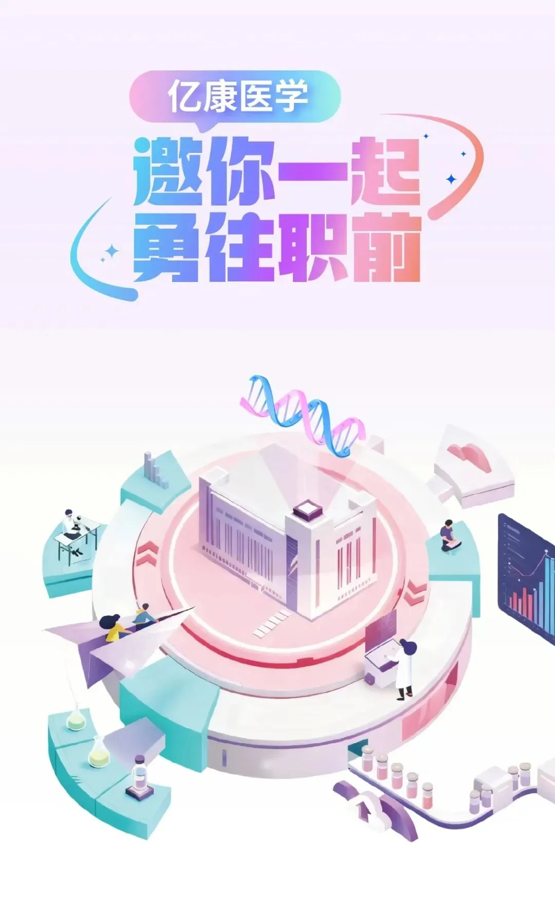

亿康基因| 生信研发项目经理JD招聘
原文：https://mp.weixin.qq.com/s?__biz=MzAwMzIzOTk5OQ==&mid=2247538663&idx=3&sn=b307ae3320596c5606ead175dda447c1&chksm=9b3c2eb7ac4ba7a102f240c025355babe4d244edbc7aa1663404924ff4686ddadce5e6edc0d8#rd 合集：求职/求学/招聘
01
写在前面
我们长期发布招聘/求职板块(甚至我给自己都发了求职：Biomamba求职| 国奖+4篇一作SCI)，欢迎各位老师/老板欢迎联系~我们也在招贤纳士：Biomamba生信基地诚招运营。其它需要求职的小伙伴也欢迎把简历发给我们[Biomamba_zhushou]，大家一起找工作/学习。用人单位也可以联系我们免费刊登招聘信息~
02
基本信息
公司：亿康基因
工作地点：苏州
招聘岗位：生信研发项目经理JD

03
岗位职责
1. 负责前沿生信技术探索与研发，包括基因组、转录组、蛋白组、代谢组、微生物组等多组学数据的深度挖掘与整合研究；
2. 挖掘潜在市场需求，参与新产品需求分析与规划设计，推动技术从研发到产品临床转化；
3. 干湿实验结合，与生化团队协作完成实验设计、数据验证与挖掘；
4. 与产品部等相关部门沟通项目进展，提供技术转化支持。
04
任职要求
1. 生物医学、生物信息学、数理统计、临床遗传学等相关专业博士学历；
2.精通Linux及至少两种编程语言（Perl/R/Python/C/C++/Java/Shell/Bash），熟悉计算生物学相关算法和vibe coding相关技术；
3. 具备多组学（基因组、转录组、蛋白组、代谢组、微生物组）数据挖掘与整合分析经验，能独立完成整合分析流程设计与优化；
4. 有多组学研发到产品临床转化经历者优先；
- 有AI多组学研发经历者优先（如机器学习/深度学习在多组学数据融合、生物标志物发现、疾病分型等场景中的应用）；
05
联系方式
请有意向且符合条件者，将个人简历发送至chenpingfang@yikongenomics.com进行求职~